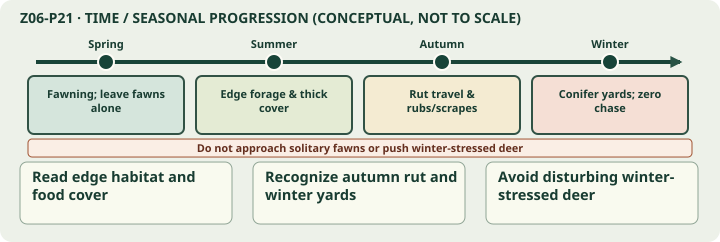

Z06-P21 · Hunting and fishing · New manuscript
White-Tailed Deer Ecology, Seasonal Movement and Habitat Sign
Interpret white-tailed deer habitat use, seasonal rut and winter yarding, and browse sign without misreading or harassing wildlife.
When it applies · Upper Midwest hardwood-conifer edges, agricultural margins, and winter cedar yards.
Equipment · Binoculars, metric scale ruler, notebook.

Actions
- Understand that white-tailed deer thrive along forest-opening edges, shifting from herbaceous summer forage to woody browse and sheltered conifer yards during deep northern winters.[H16, H17]
- Recognize heart-shaped cloven hoof prints, woody twig browse with ragged torn ends (deer lack upper incisors), autumn antler rubs, and matted snow beds in context.[H16]
- Avoid pushing or chasing deer out of winter yarding cover because forced flight in deep snow rapidly depletes critical fat reserves.[H16, H17]
Failure recognition · Confusing domestic sheep/goat tracks or clean rabbit-clipped twigs with deer sign—or harassing winter-yarded herds—misreads ecology and harms wildlife.[H16, H17]
Verify · Multiple signs (cloven track dimensions, ragged browse, and habitat cover) corroborate observation without disturbing resting animals.[H16]
Stop or change course · Stop following wildlife trails during severe deep-snow cold snaps or onto posted private or refuge lands.[H02, H16]
Evidence and editorial notes
- H02 · Minnesota DNR · Minnesota Hunting and Trapping Regulations (Current web edition)
- Section: Hunting licenses, zones, seasons, and legal methods · Conditions: Minnesota big game, small game, and bird hunting
Support: Hunters must verify current license, permit-area, season, legal-hours, blaze-clothing, and method rules with the governing authority prior to afield activity.
Limitations: Private-land trespass law, municipal ordinances, and tribal jurisdiction apply separately; emergencies do not suspend wildlife law. · Conflicting evidence: None noted.
Editorial note: Establishes Z06 hunting authority gate. · Specialist reviewer: Minnesota DNR wildlife law reviewer
Primary source · checked 2026-11-25 - H16 · Minnesota DNR · Mammals of Minnesota Species and Sign Reference (Current web edition)
- Section: Mammal ecology, seasonal movement, and sign interpretation · Conditions: Reading wildlife tracks, scat, browse, and trail patterns
Support: Substrate moisture, snow crust, and animal gait distort track dimensions; combine multiple signs and habitat context rather than single prints.
Limitations: Never handle unknown scat barehanded due to parasite eggs (e.g., Baylisascaris); sign interpretation is ecological observation, not harvest authorization. · Conflicting evidence: None noted.
Editorial note: Grounds Z06 tracking in ecology and hygiene. · Specialist reviewer: Wildlife ecologist
Primary source · checked 2026-11-25 - H17 · Minnesota DNR · White-Tailed Deer Hunting and Management in Minnesota (Current web edition)
- Section: Big-game seasonal ecology and field-hygiene cooling · Conditions: White-tailed deer habitat, rut/winter yarding, and meat spoilage limits
Support: Rapid cooling below 40 F, keeping carcasses clean of gut contents and dirt, and protecting meat from insects prevent bacterial spoilage.
Limitations: Warm autumn weather accelerates spoilage within hours; abandon harvest if safe transport and cooling cannot be achieved. · Conflicting evidence: None noted.
Editorial note: Connects Z06 harvest to cold-chain food safety. · Specialist reviewer: Wildlife manager and food-safety specialist
Primary source · checked 2026-11-25
Source lineage · New manuscript (Z06 P17 wildlife ecology) · Classification · New manuscript.